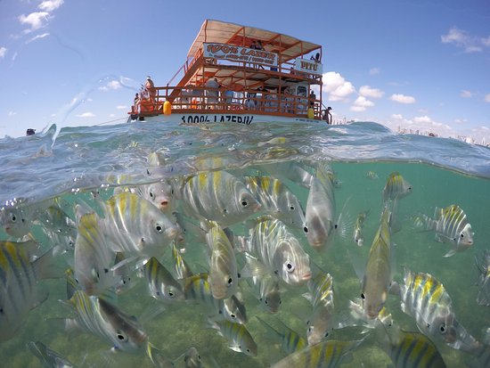
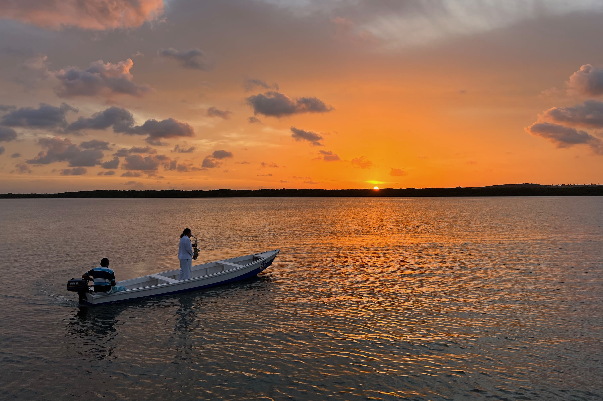
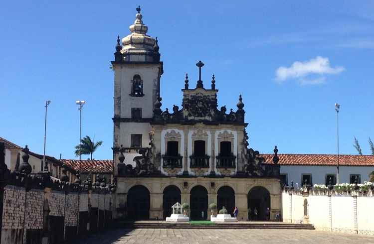

Piscinas naturais do Picãozinho

Passeio de barco saindo de Tambaú até as piscinas de água clara, cheias de peixes coloridos.
Só acontece na maré baixa.
Nível de esforço:

Refúgio Ponta do Seixas
Pousada no extremo oriental das Américas, em João Pessoa (PB)
Agendamos tudo na recepção, com transporte saindo da pousada.

Passeio de barco saindo de Tambaú até as piscinas de água clara, cheias de peixes coloridos.
Só acontece na maré baixa.
Nível de esforço:

O pôr do sol mais famoso da cidade, acompanhado pelo Bolero de Ravel tocado ao saxofone.
Nível de esforço:

Caminhada guiada por igrejas, casarões e pela história da terceira cidade mais antiga do Brasil.
Nível de esforço:
| Passeio | Duração | Valor |
|---|---|---|
| Piscinas do Picãozinho | 3 horas | R$ 90 |
| Pôr do sol no Jacaré | 4 horas | |
| Centro Histórico | 3 horas | R$ 70 |